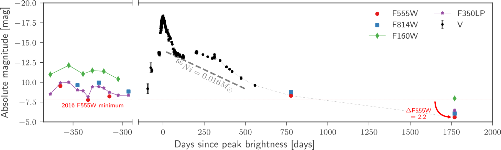
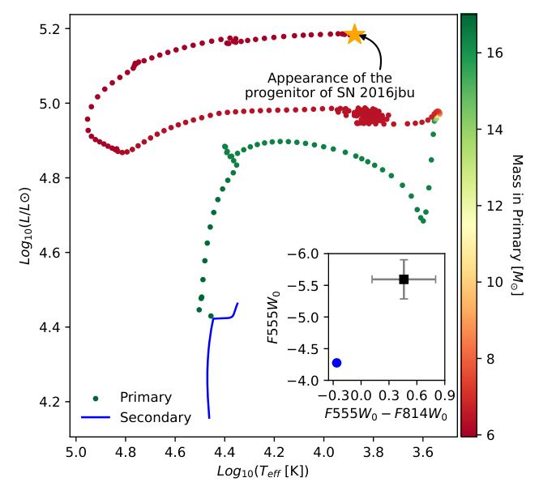

The impostor revealed: SN 2016jbu was a terminal explosion
Brennan, S. J., Elias-Rosa, N., et al. · Astronomy & Astrophysics 664, L18 (2022)
Overview
Background. Very luminous outbursts were sometimes called "supernova impostors": giant eruptions that mimic supernovae but were thought to leave the star intact. If true terminal explosions are mis-classified as impostors, rates and energy budgets for massive stars drift off course.
Science. This Letter re-evaluates AT 2016jbu / SN 2016jbu using spectral evolution and late-time data. The evidence favours a genuine core-collapse supernova rather than a non-terminal impostor event.
Impact. The case is a concrete reminder that long-lived transients need late-time confirmation before entering population studies. It sharpens criteria used in archival searches and theoretical modelling of luminous, interacting events.
Key figuresfrom the paper




The full spectral comparison series is in the arXiv HTML and PDF versions.